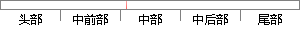

上式中x_ji是节点i传递给节点j的输入值，也就是节点i的输出值。
片段位置图

相似结果|
相似片段 1：k个比特。％：接受到的和％相关的采样点。既．既=B(％=1I％)毛(6)：从第f个比特节点传递给第／个校验节点的消息，为尸(q=6)，6∈{o，1}的信息，也就是除了第／个校验节点外其他校验节点和
|
※ 片段修改建议 ※
近似词参考：- 传递：通报
- 就是：便是
系统自动生成语句：上式中x_ji是节点i通报给节点j的输入值，也便是节点i的输出值。
注：本片段修改建议为系统自动生成，仅供参考。